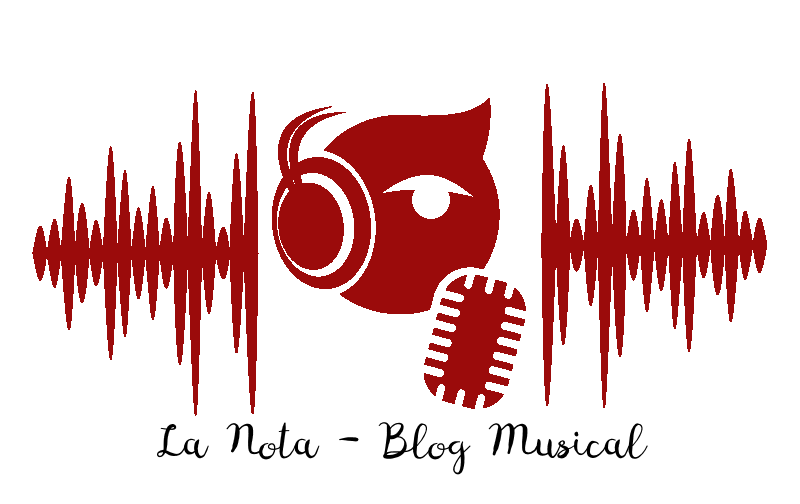

Dolores Mary Eileen O'Riordan (Ballybricken, Limerick, 6 de septiembre de 1971 - Londres, 15 de enero de 2018), conocida artísticamente como Dolores O'Riordan, fue una música, cantante y compositora irlandesa, vocalista de la banda de rock The Cranberries.
Su primer álbum en solitario, Are You Listening?, salió a la venta en mayo de 2007 y fue seguido por No Baggage en 2009. O'Riordan era conocida por su voz mezzosoprano3 y por su marcado acento de Limerick.
Apareció como jueza en The Voice of Ireland de RTÉ durante la temporada 2013-14. En abril de 2014, O'Riordan se unió y comenzó a grabar nuevo material con el trío D.A.R.K.
O'Riordan murió inesperadamente el 15 de enero de 2018, a la edad de 46 años, mientras se encontraba en Londres, Inglaterra, para una sesión de grabación.


Chris Cornell, nacido Christopher John Boyle (Seattle, Washington, 20 de julio de 1964-Detroit, Michigan, 18 de mayo de 2017),12 fue un guitarrista y cantante estadounidense que adquirió fama por ser el vocalista de Soundgarden, Audioslave y Temple of the Dog. Comenzó su carrera como baterista antes de convertirse en guitarrista y cantante.
Según la revista Hit Parade, ocupa el 4.º puesto de las mejores voces de la historia del hard rock y heavy metal. Una encuesta del sitio web de la revista Rolling Stone lo sitúa en el 9.º puesto de los mejores cantantes de la Historia, y según Planet rock ocupa el 22.º puesto de lista de las 40 mejores voces del rock.
Freddie Mercury (nacido como Farrokh Bulsara, en guyaratí, Stone Town, Zanzíbar; 5 de septiembre de 1946-Kensington, Londres, Reino Unido; 24 de noviembre de 1991) fue un cantante, compositor, pianista, y músico británico de origen parsi e indio, conocido por haber sido el líder y vocalista de la banda de rock Queen.
Como intérprete, ha sido reconocido por su poderosa voz y extravagantes puestas en escena. Como compositor, escribió muchos de los éxitos de Queen, tales como Bohemian Rhapsody, Killer Queen, Somebody to Love, Don't Stop Me Now, Crazy Little Thing Called Love, Innuendo o We Are the Champions. Además de la actividad con la banda, en los años ochenta lanzó su carrera como solista, que lo llevó a publicar dos álbumes, Mr. Bad Guy (1985) y Barcelona (1988), este último en colaboración con la soprano española Montserrat Caballé. El sencillo homónimo, una colaboración entre ambos, fue la canción oficial de los Juegos Olímpicos de Barcelona 1992.
Murió de una bronconeumonía complicada por el sida el 24 de noviembre de 1991, solo un día después de comunicar oficialmente que padecía esta última enfermedad. En 2006, la revista Time Asia lo nombró como uno de los héroes asiáticos más influyentes de los últimos sesenta años. En 2005, en una encuesta organizada por Blender y MTV2, fue nombrado el mejor cantante masculino de todos los tiempos. En 2008, la revista estadounidense Rolling Stone lo colocó en el puesto 18 en su lista de los 100 mejores cantantes de todos los tiempos, mientras que Classic Rock, al año siguiente, lo consideró el mejor cantante de rock de la historia. Por su parte, Allmusic definió a Mercury como «uno de los líderes más carismáticos y dinámicos en la historia del rock». Una encuesta hecha por The Sun, que pretendía encontrar al «máximo dios del rock», situó a Mercury en el puesto número uno. Recientemente un grupo de científicos de múltiples nacionalidades de la Logopedics Phoniatrics Vocology confirmó que Freddie Mercury tenía una voz única y superior. Era capaz de emplear subarmónicas, técnica que pocas personas pueden emplear incluso al hablar. Los estudios sugieren también que Mercury redujo el rango de su voz cuando cantó ópera por temor a que sus admiradores no reconocieran su voz.